MIP-0068: Diagrams in the docs — Mermaid by default, Kroki's other dialects where they earn it¶
| Status | Implemented — PRs #510 (task 1), #514–#519 (tasks 2–7, unstacked, all off task 1), #520 (#511, the Mermaid font pin found in task 1's review); merged 2026-09-30. Tasks: MIP-0068.tasks.md. All seven §5.3 groups drawn; task 7's three sketches kept |
| Author | Claude (Opus 5.5), with Bruno |
| Created | 2026-09-29 |
| Phase | 3 — docs only, on the mkdocs/Kroki build MIP-0064 already shipped; no Phase 1 or Phase 2 prerequisite, no cloud spend |
| Related | MIP-0064 (the Kroki build this uses), MIP-0065 (CI-CD.md, the first page drawn this way), MIP-0063 (issues and milestone for the tasks) |
| Effort | M — one config hardening plus a companion container, then ~40 diagrams across ~25 existing pages; no Scala, no new script |
| Gain | infra/dev-loop — the stack, issue and MIP lifecycles and the module boundaries become pictures, not paragraphs; user value — ARCHITECTURE.md and the map MIPs read faster for a newcomer |
| Effort vs Gain | cheap win — the renderer is already running in CI; only the diagrams are missing |
| Depends on | MIP-0064 (implemented), whose mkdocs/ stack and scripts/mkdocs.sh --self-test this edits. No Phase 1 gate, no paid resource |
| Blocked by | none |
| Risk | Diagrams drift from the prose beside them. A picture of the RAG abstain rule that is wrong reads as more authoritative than the paragraph it replaced |
| Cost so far | ~$46.39 excluding task 7 — design #500 $15.44, #510 $4.90, #514 $3.60, #515 $2.69, #516 $2.63, #517 $6.61, #518 $4.74, #520 $5.78 (summed Cost: trailers, mostly est.: seven parallel subagents in one session make the time split meaningless). #519's trailer reads ~$138.85 est., an artefact of the diff-size model counting ~4,300 lines of .excalidraw scene JSON; its real share is in the same range as the others |
1. Summary¶
MIP-0064 put a self-hosted Kroki behind the docs site, and five Mermaid diagrams use it
(CI-CD.md ×2, ARCHITECTURE.md, MIPs/README.md, the generated MIP graph). Everything else is
still arrow chains in prose, a handful of box-drawing sketches that render as monospace text, and
lifecycles described in numbered lists. This MIP sets the rules for which Kroki dialect to use,
hardens the plugin config so a bad diagram cannot ship, makes the site dark-only with diagrams
styled for it, adds the Excalidraw companion once a sketch needs it, and converts the strongest ~40 candidates from an inventory of all 105
pages under docs/.
2. Motivation¶
An inventory of every .md under docs/ on 2026-09-29 (two read-only sweeps, guides and MIPs)
found:
- Diagrams that are already diagrams, unrendered.
MIPs/MIP-0060.tasks.md:16-22is a box-drawing dependency graph;4-Research-and-plans/AGENT-STACK-SURVEY.md:117-130is box art whose right edge at line 124 is already misaligned;3-Working-on-the-repo/AGENT-SKILLS.md:59-89and4-Research-and-plans/AGENT-FRAMEWORKS-SURVEY.md:67-76are session and actor topologies in bare fences, the second with no arrows at all. - Lifecycles in prose. The MIP status lifecycle (
DEV-FLOW.md:48-51,.claude/rules/docs.md), the issue Definition of Ready and board Status (ISSUE-FLOW.md:35-75,MIP-0063§5.2), and stacked-PR restacking (DEV-FLOW.md:69-110) are the three mechanics people ask about most, and each is spread over several paragraphs. - Structure a tree can't show.
ARCHITECTURE.md:51-104lists the modules as a file tree, but the point of the split is the dependency direction (core traits ← local implementations,cliwires both), which a tree has no way to draw. - Task DAGs hidden in a column.
MIP-0056.tasks.md:27says "1 → 2 → 3 → 4 → 5 is the critical path … 7 forks from 4, 8 needs 6";MIP-0065.tasks.mdsays the stack order and the real graph differ. MIP-0063 itself argues thedepends oncolumn "is a DAG, not a chain".
The diagrams already there are hard to read. On the site's dark (slate) palette the existing
Mermaid diagrams show as boxes with almost invisible arrows (maintainer review, #500). The cause is
in the generated SVG: Kroki renders Mermaid's default light theme, .flowchart-link{stroke:#333333}
and marker fill #333333 on background-color:transparent, so dark-grey lines sit on a dark page.
Nothing in the build styles diagrams for the theme they are shown on.
The build also claims every Kroki dialect with a plain fence, including three whose companion servers do not run (§4.2), so adding diagrams at scale is unsafe until that is closed.
3. User-visible change¶
Before, DEV-FLOW.md opens with:
Issue → MIP (Draft) → acceptance → task list → stacked PRs → review → merge/restack → finish
After, the same page opens with a rendered flowchart, and its stacking section carries:

A contributor writing a new page or MIP finds one short section on which fence to use, and
3-Working-on-the-repo/DIAGRAMS.md shows one rendered example of every dialect the build
accepts. A fence the build does not serve (```bpmn) fails just docs with Kroki's message,
instead of shipping a red error box to marola.dev.
4. Data sources and dependencies reviewed¶
No new data source. The dependencies are the ones MIP-0064 pinned, read at their pinned versions.
4.1 Kroki 0.32.1 and its companions¶
The core yuzutech/kroki image serves, among others, D2, GraphViz, PlantUML with C4, Structurizr,
Vega/Vega-Lite, DBML, Erd, Nomnoml, WaveDrom, Svgbob, Pikchr, and the blockdiag family. Mermaid,
BPMN, Excalidraw and diagrams.net each need a companion container: yuzutech/kroki-mermaid,
-bpmn, -excalidraw, -diagramsnet. Kroki finds them through KROKI_<NAME>_HOST/_PORT
(Excalidraw: KROKI_EXCALIDRAW_HOST, default port 8004). mkdocs/docker-compose.yml runs only
the Mermaid companion today.
The companion images exist at the pinned tag: kroki-excalidraw:0.32.1 is 612 MB compressed,
kroki-bpmn:0.32.1 460 MB, kroki-mermaid:0.32.1 464 MB. kroki-mermaid 0.32.1 bundles
Mermaid 11.16.0, which has gitGraph, stateDiagram-v2, erDiagram, classDiagram, gantt,
timeline and mindmap.
4.2 mkdocs-kroki-plugin 1.7.0¶
Read from the published wheel:
enable_bpmn,enable_excalidrawandenable_mermaiddefault totrue;enable_diagramsnetdefaults tofalse. Withfence_prefix: ""(MIP-0064's choice, so plain```mermaidrenders on GitHub too), a```bpmnor```excalidrawfence is claimed by the plugin today and sent to a Kroki that cannot render it.fail_fastdefaults tofalse. A render error is logged at ERROR throughmkdocs.plugins.get_plugin_loggerand the page gets an inline<details>error block. Understrict: truethe logged error should still fail the build at the end. That is read from the source, not run: §7 makes it a test.@from_file:<path>as a fence body loads the diagram source from a file relative todocs_dir. This keeps an.excalidrawscene (JSON) out of the Markdown and editable in the Excalidraw app.stylesinjects one set of colours (box, text, line, background) into every diagram's source before rendering;styles_light/styles_darkrender each diagram twice and emit Material's#only-light/#only-darkpair. Both needtag_format: img(the default, which marola uses). Style injection covers mermaid, plantuml, c4plantuml, graphviz, d2, nomnoml, structurizr and blockdiag. It does not cover dbml, vegalite or excalidraw.
4.3 GitHub's Markdown renderer¶
GitHub renders four diagram fences: mermaid, geojson, topojson and stl. Every other
Kroki dialect shows as source on github.com. The site, not GitHub, is where the docs are read
(maintainer review, #500), so this is a tiebreaker between two equally good dialects, not a
reason to force a picture into Mermaid.
Scope. Only pages mkdocs renders. docs/benchmarks/ and docs/superpowers/ are in
exclude_docs (mkdocs.yml:28) and are out of scope.
Pick: the dialect best suited to each picture. In practice that is Mermaid for most flows, lifecycles, sequences and ER models; D2 or C4-PlantUML for layered or zoned architecture; DBML for schemas; Vega-Lite for charts; Excalidraw for hand-drawn sketches and wireframes. BPMN and diagrams.net are disabled: nothing in the inventory needs them.
5. Design¶
5.1 The dialect rule¶
Written once, into .claude/rules/docs.md (auto-loaded for docs/**), and illustrated in the new
docs/3-Working-on-the-repo/DIAGRAMS.md:
| Picture | Fence | Why this one |
|---|---|---|
| flow, decision tree, DAG, lifecycle, sequence, ER, class, gantt, git history | mermaid |
covers most pictures, and also renders on GitHub |
| layered or zoned architecture, the module map | d2 or c4plantuml |
nested containers without Mermaid's subgraph crowding |
| a schema from DDL | dbml |
reads like the SQL it mirrors |
| a chart from a results table | vegalite |
a real axis and scale, not a table of numbers |
| a sketch or wireframe | excalidraw with @from_file:assets/diagrams/<name>.excalidraw |
hand-drawn is the honest register for a mock, and the scene opens in the Excalidraw app as a whiteboard and comes back as the same file |
Two more rules come with it. Draw only a picture the prose beside it already states, and keep that prose: the diagram is the summary, the text is the source of truth. Keep a diagram under about 15 nodes, and split it rather than grow it.
5.2 Build hardening (mkdocs/mkdocs.yml, mkdocs/docker-compose.yml, scripts/mkdocs.sh, docs/assets/marola.css)¶
- kroki:
server_url: http://kroki:8000
fence_prefix: ""
http_method: POST
fail_fast: true
enable_bpmn: false
enable_diagramsnet: false # already the default; stated so the self-test can assert it
styles: { ... } # marola.css's cyan on slate: lines, text, box strokes
fail_fast: true turns a broken diagram into a failed build naming the page, instead of relying
on strict counting a plugin ERROR log. enable_bpmn: false hands a ```bpmn fence back to
Markdown as a code block, so it cannot render as an error. scripts/mkdocs.sh --self-test gains
one assertion per key, next to its existing fence_prefix check.
Dark only. theme.palette drops its default (light) entry and its toggle and keeps slate,
so there is one theme to style for: one styles block, one render per diagram, and nothing
to check twice. marola.css's [data-md-color-scheme="default"] block goes with it. For the
dialects style injection skips (dbml, vegalite, excalidraw), marola.css gives the image a light
card background, so it stays legible. As built (task 1): the fence carries {bg-dark=white}, which
the plugin writes as an inline background that marola.css pads into a card, since the SVG file
names cannot tell dialects apart. C4 relationships and Mermaid gitGraph need one line of their
own each; DIAGRAMS.md carries both. The five existing diagrams are re-rendered by the same
change and checked in §7 step 4.
Task 7, and only if §5.3's Excalidraw cases hold up, adds the companion to the compose stack,
pinned and health-checked like mermaid:
excalidraw:
image: yuzutech/kroki-excalidraw:0.32.1
healthcheck: { test: ["CMD", "nc", "-z", "localhost", "8004"], ... }
kroki:
environment:
- KROKI_MERMAID_HOST=mermaid
- KROKI_EXCALIDRAW_HOST=excalidraw
5.3 The conversion set¶
Only the inventory's strong candidates. The medium list stays in the Appendix as the queue for "draw it when you next touch the page".
- ASCII to rendered:
MIP-0060.tasks.md:16-22,AGENT-STACK-SURVEY.md:117-130(d2),AGENT-SKILLS.md:59-89,AGENT-FRAMEWORKS-SURVEY.md:67-76. - ARCHITECTURE.md: the module map from
:51-104(d2, kept alongside the tree); the six integrations:248-264(classDiagram); origin resolution:139-155(flowchart; also fixes the duplicated "4."); DSPy summarize → review:274-306and the MCP handshake:358(sequenceDiagram); water-quality verdicts:436-455and RAG strict vs general:463-478(flowchart). The §3 Telegram diagram at:221keeps MCP out on purpose (:237-243) and stays as it is. - Process docs:
DEV-FLOW.mdopening loop (flowchart), MIP lifecycle (stateDiagram-v2), stacking and restacking (gitGraph);ISSUE-FLOW.mdobject model (erDiagram) and readiness and board Status (stateDiagram-v2, transitions labelled with thejustcommand);ROADMAP.mdordering with the MIP-0002 gate (flowchart). - MIPs: MIP-0056 pipeline (flowchart) and schema (dbml); MIP-0063 §5.2 board Status and §5.5
direction of truth; MIP-0065 §3 before/after; MIP-0025 §5 train-and-export pipeline; MIP-0039
§5.2 mode × severity; MIP-0036 §5.1 launch schedule (gantt). Sequence diagrams for the
multi-actor flows: MIP-0060 §5.2 (who holds the token), MIP-0042 §5.3 (with the fallback as an
alt), MIP-0006 §5.2, MIP-0015 §5, MIP-0020 §5.5, MIP-0035 §5, MIP-0008 §5.5. Task DAGs for MIP-0056, 0063, 0065 and 0025.tasks.md. - Excalidraw: only where a sketch is the best picture, never to have the dialect. The
cases so far: the MIP-0016 coastline-offset geometry (
:61,:113), the MIP-0042 v1/v2 mocks (:53,:61), the MIP-0054 toolbar mock (:55). If review of task 7 finds none of them better as a sketch than as the ASCII it replaces, task 7 is dropped and the companion never lands.
Editing an Implemented MIP to add a diagram of what it already says does not change its status. A diagram that contradicts its MIP is a finding for the MIP author, not a silent fix.
5.4 The mip skill¶
.claude/skills/mip/SKILL.md's template gains one line under §5: "a flow, lifecycle, schema or
multi-actor exchange gets a diagram (.claude/rules/docs.md §Diagrams)". New MIPs then start
with a diagram, rather than waiting for a later conversion pass.
5.5 Task order¶

Nothing in 2–7 shares a file with another task, so after task 1 they can go in parallel.
Nothing here is deterministic scoring logic and nothing goes through an LLM.
6. Scoring / safety impact¶
None. The water-quality and RAG diagrams (§5.3) draw rules Swimability and OceanQa already
implement. They are checked against core/ source in review, and the code stays authoritative.
7. Verification plan¶
- Fail-fast holds. On a scratch branch, add a
```mermaidfence with a syntax error, then runjust docs. It must exit non-zero and name the page. Then a```bpmnfence: it must render as a plain code block, not as an error. Record both outputs in task 1's PR. - Self-test.
scripts/mkdocs.sh --self-testassertsfail_fast: true,enable_bpmn: falseandenable_diagramsnet: false, and fails if any key is removed. - Every dialect renders.
DIAGRAMS.mdholds one example each of mermaid, d2, c4plantuml, dbml and vegalite; task 7 adds excalidraw. Withfail_fast,just docspassing is the render check for all of them. - Legible on slate. Screenshot
CI-CD.md,DIAGRAMS.md,ARCHITECTURE.mdandMIPs/README.mdwithjust docs-serveand attach them to the PR. Every arrow and label must be readable at normal zoom; one that is not fails the task. Each later task attaches the same for the pages it touched. - GitHub, best effort. A Mermaid fence that GitHub's renderer rejects (its Mermaid version lags Kroki's) is noted in the PR. It is not simplified to suit GitHub unless that costs the site nothing.
- Gates.
just quality(the pre-push hook) andci.yml's docs job are green on every task PR.
Done means: all seven tasks merged, every §5.3 item drawn or listed in the PR as dropped with a
reason, and no ```text or bare fence left in docs/ that is a diagram.
8. Risks, limitations, and honest caveats¶
- Drift. Nothing checks that a diagram matches the code or the prose. The mitigation is §5.1's rule (the diagram only summarizes text that stays) and review. A diagram is harder to diff than a paragraph.
- Non-Mermaid dialects are site-only. Someone reading
ARCHITECTURE.mdon GitHub sees D2 source for the module map. Accepted: the site is the medium. - Excalidraw costs build time. The companion adds a 612 MB pull to every CI docs build on
ubuntu-latest(free on a public repo, but minutes of wall clock on a cold runner), and a scene file is JSON that nobody can review line by line. The PR must carry the rendered image. - Dark only removes a choice. A reader who prefers light pages loses the toggle. Accepted in review (#500) to get one theme styled properly instead of two styled halfway. Dialects outside style injection get a light card rather than a true dark rendering.
fail_faston a flaky Kroki. A Kroki that is slow to start now fails the build instead of shipping error boxes. That is the right trade, and the compose health checks already wait for it.
9. Alternatives considered¶
- Do nothing. The ASCII keeps misaligning, and lifecycles stay paragraphs. Rejected: the renderer already runs on every docs build.
- Mermaid only. Simplest, and everything renders on GitHub. It optimises for a medium the docs are not mainly read in, and it makes the module map and MIP-0042's two-zone picture cramped.
- Keep both themes, render each diagram twice (
styles_light/styles_dark). Doubles every render and every legibility check, for a light mode nobody asked to keep. - Commit rendered SVGs. This would render on GitHub for every dialect, but it adds a second copy that goes stale and a regenerate step. Kroki exists so the source is the only copy.
- kroki.io instead of self-hosted companions. No 612 MB pull, but doc content would leave the build host, against MIP-0064 §4.3.
- Generate the task DAGs from
depends on. It would be better than drawing them by hand, and it is left as a follow-up (§11).
11. Open questions¶
- The
stylesvalues: settled in task 1 —marola.css's slate tokens plus a transparent background (mkdocs/mkdocs.yml). - Follow-up MIP: generate each
MIP-NNNN.tasks.mddependency graph from itsdepends oncolumn, the same wayscripts/mip_graph.pygenerates the MIP graph, so task DAGs cannot drift. Needs the next MIP number.
Appendix¶
Checked live¶
mkdocs/mkdocs.yml:56-69at69badea: two palettes,defaultandslate, keyed onprefers-color-scheme, each with a toggle icon. So the site does have a light/dark toggle today.-
A local
scripts/mkdocs.shbuild ofCI-CD.md, 2026-09-29: the Kroki SVG carriesbackground-color:transparent,.flowchart-link{stroke:#333333}and marker fill#333333. -
https://docs.kroki.io/kroki/setup/install/, 2026-09-29: the list of core-image dialects, and the companion images for Mermaid, BPMN, Excalidraw and diagrams.net. yuzutech/krokiat tagv0.32.1,docs/modules/setup/pages/configuration.adocandexamples/kroki-docker-compose.yml, 2026-09-29:KROKI_EXCALIDRAW_HOST, default port 8004, andKROKI_BPMN_HOSTat 8003.yuzutech/krokiatv0.32.1,mermaid/package.json, 2026-09-29:"mermaid": "11.16.0".- Docker Hub
yuzutech/kroki-{excalidraw,bpmn,mermaid}:0.32.1, 2026-09-29: all present; 611,972,995, 460,255,274 and 463,852,173 bytes; pushed 2026-08-12. mkdocs_kroki_plugin-1.7.0-py3-none-any.whl(pip download), 2026-09-29:config.pydefaults (enable_*,fail_fast,tag_format,styles_light/styles_dark),render.py's_err_response,parsing.py's@from_file:,styles.py's list of injectable types, andlogging.py's use ofget_plugin_logger.https://docs.github.com/en/get-started/writing-on-github/working-with-advanced-formatting/creating-diagrams, 2026-09-29:mermaid,geojson,topojson,stl.
Not checked¶
- That
strict: truefails on the plugin's ERROR log withfail_fast: false. This is read from the source, not run, and §7 step 1 makes it moot. - A screenshot of today's diagrams on slate. The illegibility is the maintainer's observation
(#500) plus the SVG's own CSS, read from a local
scripts/mkdocs.shbuild ofCI-CD.md. - GitHub's own Mermaid version, and whether it accepts every construct Mermaid 11.16 does.
- That the Excalidraw companion renders a scene exported by the current Excalidraw app.
- The inventory's line numbers are as of
69badea; they drift as pages change.
Medium candidates (the "when you touch it" queue)¶
TELEGRAM-SETUP.md:69 polling vs webhook; RUN-LOCALLY.md:201 chat-widget hops, :291 site
build, :368 Dockerfile stages; GEMINI-CODE-ASSIST.md:44 app install and OAuth;
EFFECTS-MAP.md:21 module map by effect class (d2); ARCHITECTURE.md:160 two-lane map vs chat,
:404 trace waterfall, :580 phases (timeline); DEV-FLOW.md:174 deps and mip stacks, :301
docs ship chain (extend CI-CD.md:10); FUTURE-WORK.md:30 ActivityScoring, :399 the three
agents; MIP-0003 cache decorator, MIP-0012 /ask loop, MIP-0011 hook lifecycle, MIP-0034 feeds,
MIP-0037 service worker, MIP-0038/0040/0062 decision rules, MIP-0051/0057 deployment (C4),
MIP-0055 hybrid retrieval, MIP-0064 its own build, MIP-0029 and MIP-0044 (mindmap), MIP-0052
grid cost (vegalite, borderline).